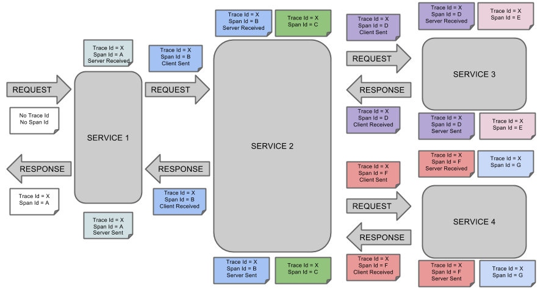
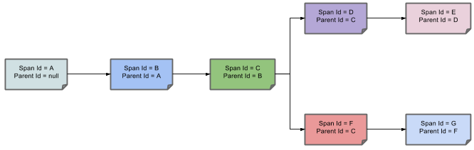

背景
在微服务系统中，各个微服务之间通过http、rpc等方式相互调用，形成了一个调用网络。当微服务系统逐渐庞大，有成百上千个微服务，这个调用网络就会变得非常庞杂。为了能够知道一次请求经过了哪些服务，经过的先后顺序是怎样的，以及在每个服务停留了多长时间，我们需要一个调用链路的追踪工具来帮我们收集这些信息，以便于理清服务链路、定位服务的短板所在。
zipkin
zipkin就是一个这样的追踪工具。zipkin是典型的C/S架构，zipkin-client负责埋点、采样，将调用轨迹发送给zipkin-server，zipkin-server负责收集数据并存储，再暴露API给Web UI，进行调用链路的展示。
zipkin-server包含四个组件，分别是collector、storage、search、web UI
- collector 就是信息收集器,作为一个守护进程，它会时刻等待客户端传递过来的追踪数据，对这些数据进行验证、存储以及创建查询需要的索引。
- storage 是存储组件。zipkin 默认直接将数据存在内存中，此外支持使用Cassandra、ElasticSearch 和 Mysql。
- search 是一个查询进程，它提供了简单的JSON API来供外部调用查询。
web UI 是zipkin的服务端展示平台，主要调用search提供的接口，用图表将链路信息清晰地展示给开发人员。
zipkin-client的java实现是brave，上图中的Instrumented reporter指的是集成了brave
brave
brave是对Dapper的一个java实现（Dapper 勇敢(荷语)）
核心概念
Span：span是brave向zipkin-server上报的最基本单位，包含span id、时间戳、、调用时长、tag信息等，代表一个调用过程
Trace：一个trace由多个span组成，代表一次请求的整体调用链路

上图可以简化成树形结构：

Instrumentations
brave对不同的调用过程都进行了针对性实现：
sleuth
spring-cloud-sleuth 2.0是对brave的封装，以便于在spring cloud中接入
Loss & Benefit
分布式链路追踪带来的好处无需多说，带来的坏处就是增加了额外的系统开销，zipkin-client是要嵌入到业务代码中的，而且要将调用轨迹发给zipkin-server增加了网络开销，因此，sleuth提供了方便的配置，让开发者可以自定义采样率，而且也可选择不给zipkin-server发送调用轨迹。